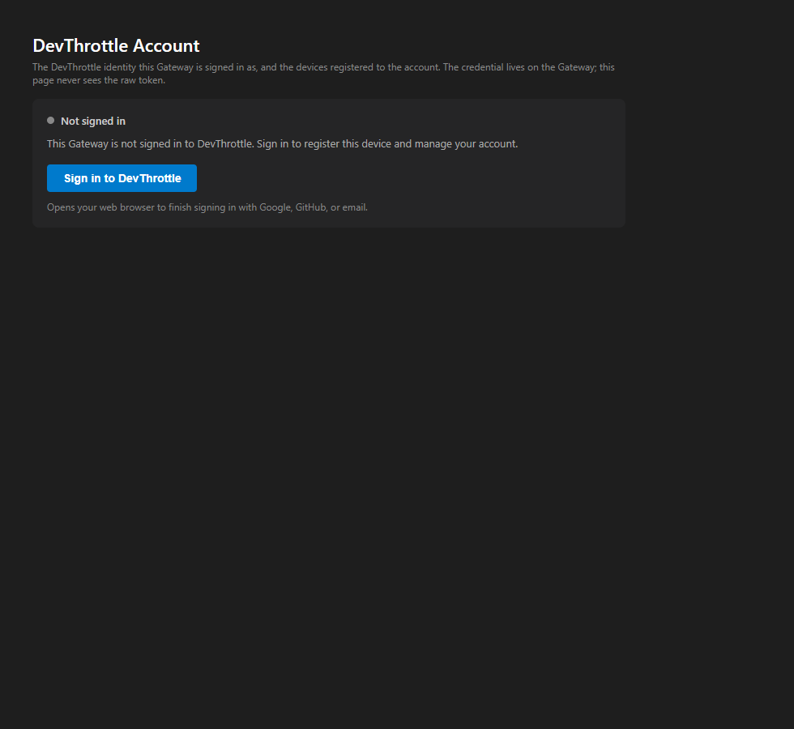
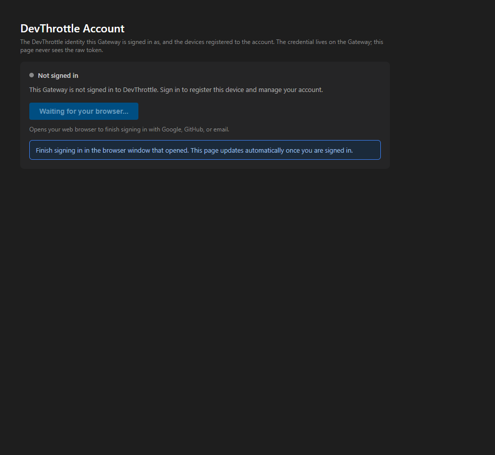
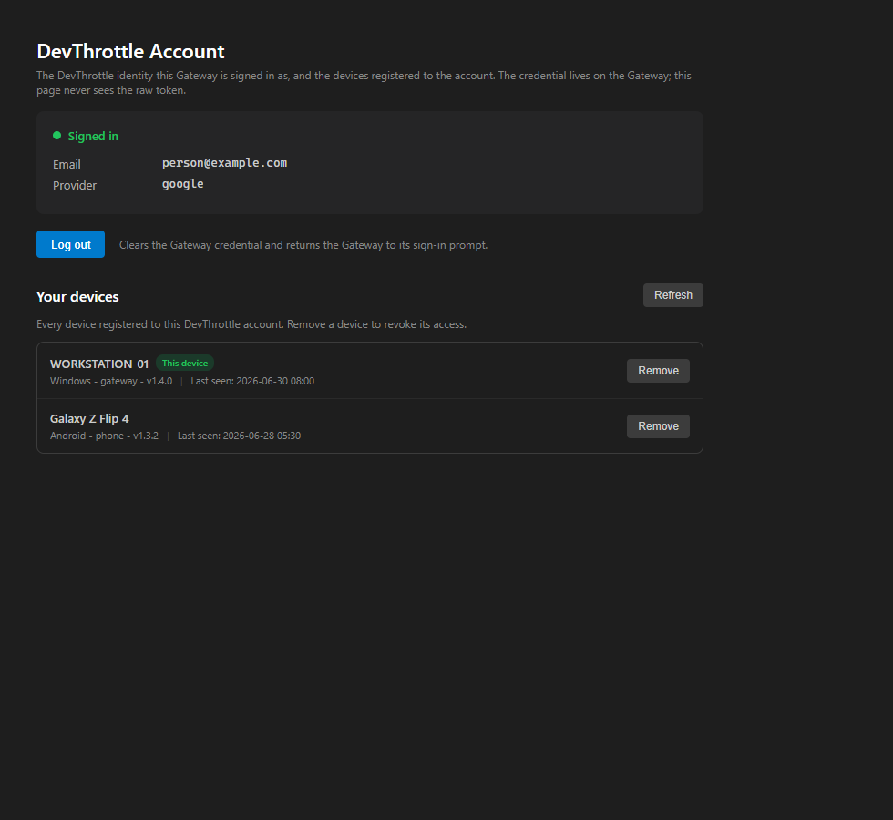
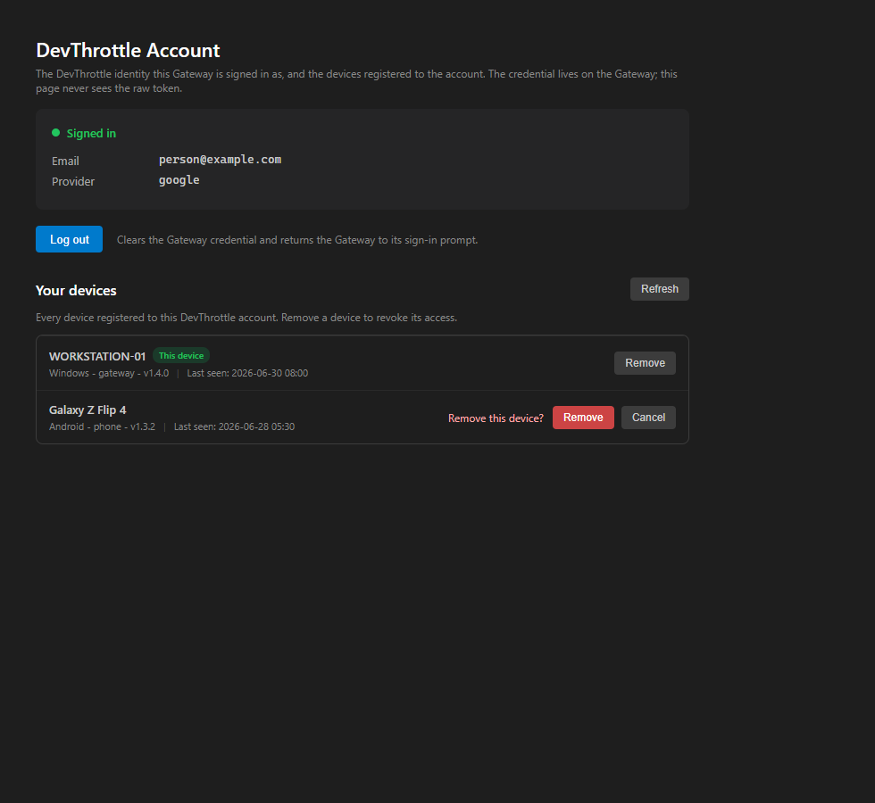
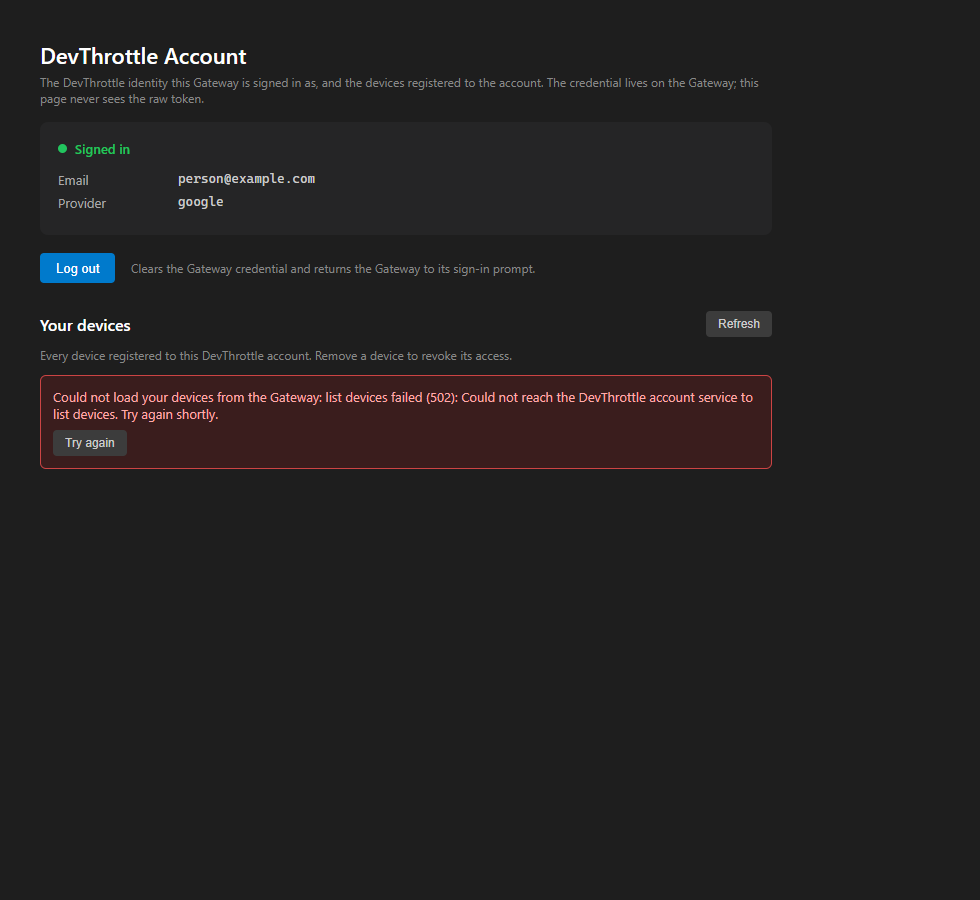
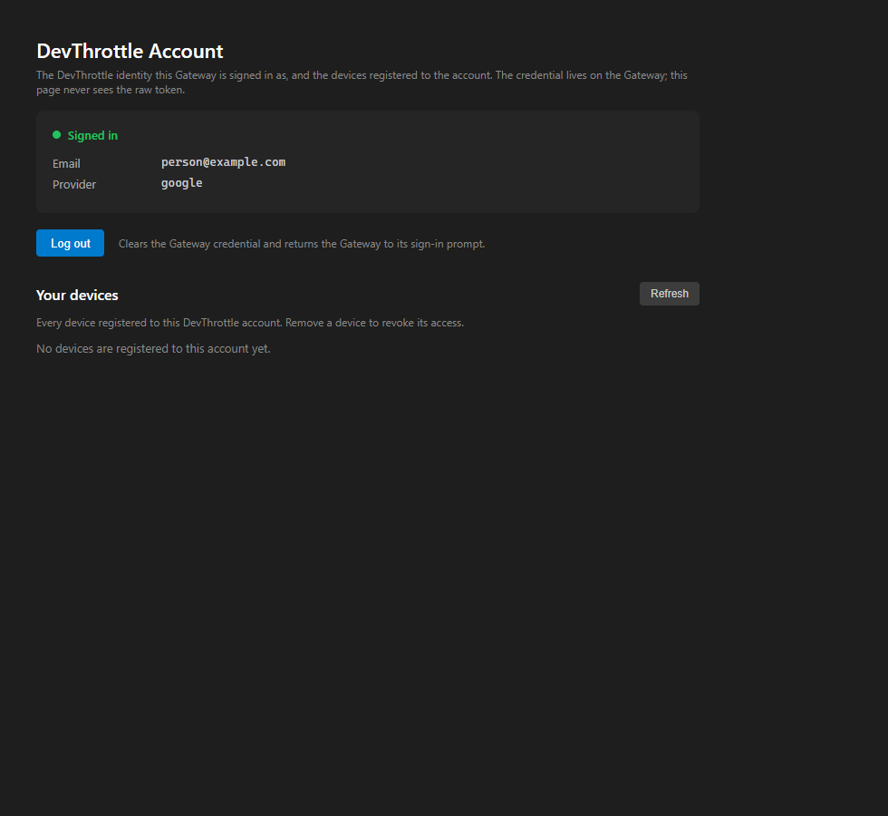

issue-853-cockpit-account. Built clean on the full solution; verified by bUnit component tests, Gateway endpoint tests, and real-browser screenshots of the genuine compiled Account markup.POST /account/sign-in, which starts the existing #637 browser loopback sign-in in the background; the page then shows an in-progress state and polls GET /account/status (#638) until the Gateway reports signed-in. The old "use the tray" static text is gone.GET /account/devices (#854): name, platform / device-type / app-version, last-seen, a green This device marker, and a per-row Remove.DELETE /account/devices/{id} (#854) and refreshes the list so the row disappears.src/CcDirector.Gateway.Contracts/AccountSignInDto.cs (new) - SignInStartResponseDto (token-free).src/CcDirector.Gateway/Api/AccountSignInEndpoint.cs (new) - POST /account/sign-in, kicks off GatewaySignInService.RunSignInAsync in the background.src/CcDirector.Gateway/GatewayHost.cs - maps the new endpoint with the existing SignIn service.src/CcDirector.Cockpit/Services/GatewayClient.cs - GetAccountDevicesAsync, RemoveAccountDeviceAsync, StartSignInAsync.src/CcDirector.Cockpit/Components/Pages/Account.razor - the redesign.src/CcDirector.Cockpit.Tests/AccountPageTests.cs (new) - 7 bUnit assertions + proof-artifact emission.src/CcDirector.Gateway.Tests/Account/AccountSignInEndpointTests.cs (new) - 2 endpoint decision-path tests.| # | Criterion | Expected | Actual | Result |
|---|---|---|---|---|
| 1 | Signed-out page shows a working sign-in action; clicking starts the Gateway browser loopback sign-in and, on completion, the page reflects signed-in. | A Sign in button that calls the Gateway sign-in trigger and then shows the page becoming signed-in. | Sign in button -> POST /account/sign-in -> Gateway runs the #637 loopback in the background; page shows the in-progress banner and polls GET /account/status until signed-in. bUnit SignIn_click_calls_start_endpoint_and_shows_progress proves the click hits the endpoint and the progress state renders. Screenshots: signed-out + sign-in progress. |
PASS (rendering + trigger); live browser-loopback completion = QA gate |
| 2 | Signed-in page shows a "Your devices" list, one row per device, each with name, last-seen, and a Remove button. | One row per device returned by GET /account/devices. |
bUnit SignedIn_lists_devices_with_thisdevice_marker_platform_and_lastseen renders the real component against a stubbed two-device endpoint response and asserts both rows with name + platform + "Last seen:". Screenshot: signed-in devices. |
PASS |
| 3 | The current device is visually marked "This device". | The Gateway's own device row carries a marker. | The device whose thisDevice=true shows a green "This device" badge; the other does not (asserted in the same bUnit test). Screenshot: signed-in devices (WORKSTATION-01 badged). |
PASS |
| 4 | Clicking Remove, after confirmation, calls the removal endpoint and the row disappears on refresh. | Confirm -> DELETE -> row gone. | bUnit Remove_requires_confirmation_then_drops_the_row_on_refresh: first click reveals the confirm row and revokes nothing; confirm calls DELETE /account/devices/{id} (asserted via the stub's revoked-id list) and the refreshed list drops the row. Remove_cancel_keeps_the_device proves Cancel is safe. Screenshot: remove confirmation. |
PASS (confirm + DELETE + refresh logic); live cloud revoke round-trip = QA gate |
| 5 | When the device list cannot be fetched, the page shows an explicit error state, not an empty list presented as "no devices". | A distinct error state. | On a Gateway/cloud 502 the page shows a red error banner ("Could not load your devices ... Try again shortly.") with a Try again button; bUnit Devices_error_shows_explicit_error_not_empty_list asserts the error state is present and the empty state and device rows are NOT. The empty account is its own distinct state (Devices_empty_account_shows_distinct_empty_state). Screenshot: device-list error. |
PASS |
Rendered by the real Account Razor component against contract-faithful stubbed Gateway responses (the #854 / #853 DTO shapes), emitted by the bUnit proof test and screenshotted over loopback HTTP.






CcDirector.Cockpit.Tests/AccountPageTests.cs - 7 assertions + 1 proof-artifact emitter: all PASS.CcDirector.Gateway.Tests/Account/AccountSignInEndpointTests.cs - 2 decision-path tests (no-flow host returns explicit not-available; already-signed-in returns AlreadySignedIn with no token in the body): PASS. (Existing #854 AccountDevicesEndpointTests, 9 tests, still PASS.)dotnet build cc-director.sln -> Build succeeded, 0 Warning(s), 0 Error(s).No architecture or security drift. The page remains a pure client of the Gateway account endpoints; the new POST /account/sign-in wraps the existing #637 sign-in service and the captured token never leaves the Gateway. Security rule DT-05 is preserved - none of the three new contracts (SignInStartResponseDto, and the consumed AccountDevicesResponseDto / RevokeDeviceResponseDto from #854) carry an access or refresh token, and the new endpoint logs only outcomes, never credential material (asserted by AlreadySignedIn_ReturnsAlreadySignedIn_NoToken).
The following require a staged signed-in DevThrottle account against a reachable cloud device registry, which cannot be staged from this automation seat, so they are the QA verification gate (not faked here): (a) the live browser-loopback sign-in completing and flipping the page to signed-in; (b) the live cloud device list rendered from a real account; (c) the live Remove cloud revoke round-trip. The rendering, interaction, error-handling, and Gateway endpoint decision logic behind all three are proven above by component + endpoint tests and real-browser screenshots against the exact #854/#853 contract shapes.